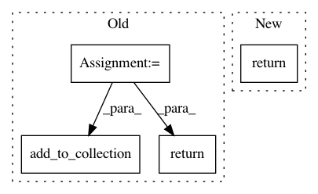

ab7dddff1eac1520704b86e2305ea3c49d2a3c04,tensorflow_transform/analyzer_nodes.py,,_bind_future_as_tensor_v2,#Any#Any#Any#,177
Before Change
if temp_dir and is_asset_filepath:
// Wrap asset files using `tf.saved_model.Asset` to ensure that
// `SavedModel`s exported are hermetic.
result = tf.saved_model.Asset(temporary_graph_tensor)
graph.add_to_collection(ASSET_REPLACEMENTS, result)
graph.add_to_collection(
TENSOR_REPLACEMENTS,
TensorSink(temporary_graph_tensor, future, is_asset_filepath))
return result
def bind_future_as_tensor(future, tensor_info, name=None):
Bind a future value as a tensor.
After Change
is_asset_filepath))
if is_asset_filepath and temporary_analyzer_info.asset:
graph.add_to_collection(ASSET_REPLACEMENTS, temporary_analyzer_info)
return temporary_analyzer_info.asset
else:
return temporary_analyzer_info.graph_tensor
In pattern: SUPERPATTERN
Frequency: 3
Non-data size: 4
Instances
Project Name: tensorflow/transform
Commit Name: ab7dddff1eac1520704b86e2305ea3c49d2a3c04
Time: 2020-11-30
Author: varshaan@google.com
File Name: tensorflow_transform/analyzer_nodes.py
Class Name:
Method Name: _bind_future_as_tensor_v2
Project Name: tensorflow/transform
Commit Name: 50fb147c5354ebe512ec11d4684a0f6f4fadc1dc
Time: 2021-01-13
Author: varshaan@google.com
File Name: tensorflow_transform/analyzer_nodes.py
Class Name:
Method Name: _bind_future_as_tensor_v2
Project Name: tensorflow/transform
Commit Name: 97507c4871dff5fb5e4bd33d2f5cf3f8bd3aceba
Time: 2020-09-01
Author: varshaan@google.com
File Name: tensorflow_transform/analyzer_nodes.py
Class Name:
Method Name: bind_future_as_tensor